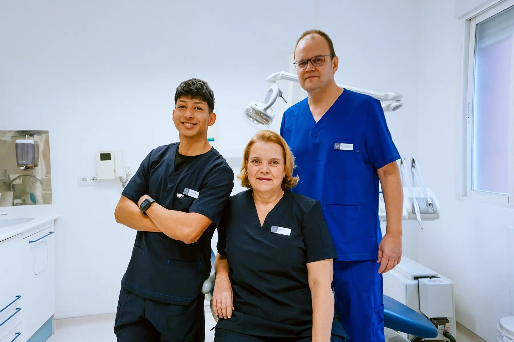

Dentista cerca de Metro Oporto
Clínica dental cerca de Metro Oporto con atención familiar, tratamientos personalizados y cita previa.
Clínica dental próxima a Oporto
Si buscas un dentista cercano, con trato claro y planificación personalizada, Marcos Martínez Clínica Dental atiende a pacientes de Oporto, Opañel, Oporto, Vista Alegre, Abrantes y Carabanchel.
Trabajamos con cita previa para revisar cada caso con calma, explicar opciones y orientar el tratamiento según las necesidades de salud bucodental de cada paciente.

Preguntas frecuentes
¿Dónde está la clínica dental?
En Camino Viejo de Leganés, 115, Piso 1ºD, cerca de Oporto, Opañel, Oporto y Carabanchel.
¿Atendéis con cita previa?
Sí. Recomendamos llamar antes al 915 60 81 09 o escribir por WhatsApp.
¿Qué tratamientos ofrece la clínica?
Odontología general, implantes, ortodoncia, odontopediatría, periodoncia, endodoncia, estética dental, prótesis y bruxismo/ATM.